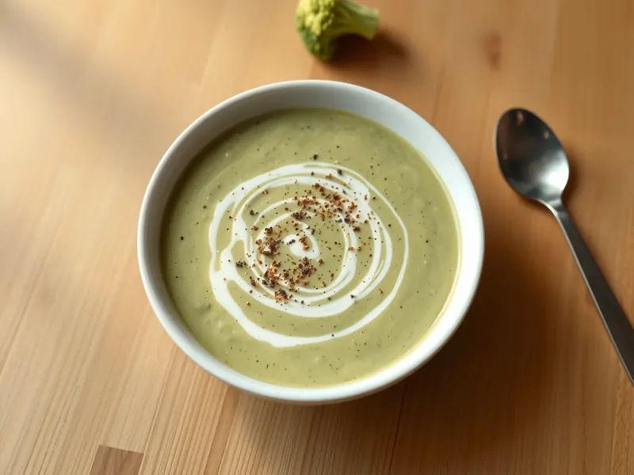

Фото: Иллюстрация ИИ, Cloudflare Workers AI
Крем-суп из брокколи с сыром
Нежный зелёный суп-пюре из брокколи со сливками и тёртым сыром
25 мин3 порц.324 ккал на порциюБ 14 · Ж 24 · У 17Европейская кухня
Продукты на 3 порц.
- Брокколи500 г
- Лук репчатый1 шт
- Сливочное масло20 г
- Вода600 мл
- Бульонный кубик1 шт
- Сливки 20%150 мл
- Сыр твёрдый80 г
- Мускатный орех1 щеп.
- Перец чёрный молотыйпо вкусу
Как готовить
- Разберите брокколи на соцветия, толстый стебель очистите и нарежьте кружками. Мелко нарежьте лук.
- Обжарьте лук в сливочном масле на среднем огне 4 минуты до прозрачности.
- Добавьте брокколи, воду и бульонный кубик. Варите после закипания 8-10 минут на среднем огне, пока стебель не будет легко протыкаться ножом.
- Пробейте суп блендером до гладкости, влейте сливки и прогрейте 2 минуты на слабом огне, не доводя до кипения.
- Снимите с огня, всыпьте тёртый сыр и размешайте до растворения. Приправьте мускатным орехом и перцем.
Совет. Не переваривайте брокколи дольше 10 минут, иначе суп станет буро-серым и появится капустный запах. Замороженная брокколи тоже подходит, её варят 7 минут.